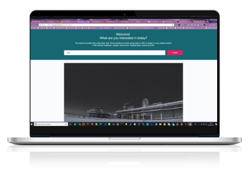

The repo for each project can be found on GitHub. My Project are a mix of Web and Android applications using various technologies, languages, API's and frameworks.
Web Projects.

Project Fetch
Is a one page website, using Asynchronous data request using The fetch() method.